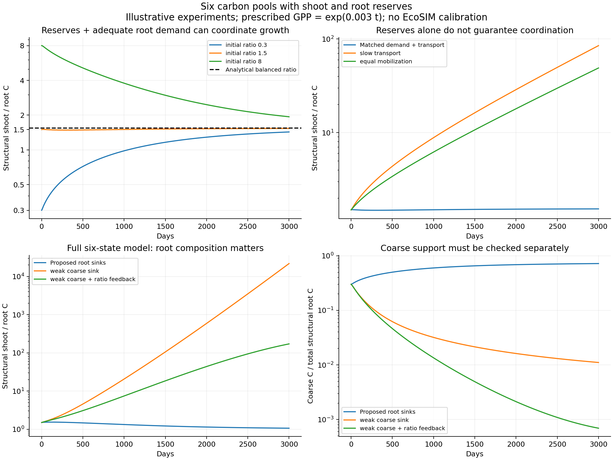

Can shoot and root reserves coordinate growth?
Yes, under identifiable conditions. Two reserve pools allow supply, transport, maintenance, and growth to adjust separately. They do not, by themselves, guarantee a stable shoot–root ratio or an adequate coarse-root framework.
1. Extend the four structural pools with two reserves
| State | Meaning |
|---|---|
| S | Shoot structural C, including unresolved leaf and stem components. |
| F | Fine-root structural C. |
| M | Medium-root structural C. |
| C | Coarse/primary framework structural C, including the unresolved primary extension zone. |
| Nₛ | Shoot reserve C: a lumped, mobilizable nonstructural carbon pool. |
| Nᵣ | Root reserve C shared by the three root groups. |
All states are g C m⁻² ground. Time is days. Prescribed GPP, G(t), is g C m⁻² day⁻¹ and enters Nₛ. Reserves are carbon mass, not dry biomass. Their synthesis and mobilization costs are included only through the growth yields; separate storage-conversion costs are omitted.
Choose fixed positive active fractions aᵢ ≤ 1. These effective capacities replace explicit leaf/sheath and living root tissues; they are not water volumes. Established positive shoots and root framework are required. Germination and recovery from complete organ loss need additional rules.
GPP → shoot reserve ⇄ root reserve → root structural growth
Shoot reserve also supplies shoot growth. Maintenance draws from the local reserve first. A shortage causes explicitly budgeted structural catabolism. The model contains no automatic F → M → C maturation conveyor.
Compared with the four-pool proposal, the two algebraic mobile-carbon balances are replaced by differential reserve balances. Maintenance is now local, and the transfer flux includes carbon for root maintenance as well as root growth.
2. Flux rules and all six equations
2.1 Reserve-gradient transport
k is day⁻¹; J is g C m⁻² day⁻¹, positive from shoot to root. A root reserve excess can reverse J even when G = 0. Transport conserves carbon: the same J leaves one reserve and enters the other. The empty-reserve boundary is inward-pointing: an empty compartment cannot export through this rule. Discrete numerical steps must still respect donor availability.
This is the gradient form used in EcoSIM’s ShootRootElmTransfer, lines 598–615. EcoSIM also uses branch/layer weights, source–sink mass caps FWTC/FWTS, active-tissue fractions, and minimum linked masses. Those details are not reproduced here. Results for this reduction are not a proof of behavior or defects in the full model.
2.2 Preserve the original root-allocation hypothesis
The baseline keeps the conductance/sink closure of the four-pool proposal so that adding reserves does not silently change root architecture. With B₀ > 0 and dimensionless bᵢ > 0:
H and H₃ are zero when a required input is zero; φ = 0 if its denominator is zero. vᵣ is day⁻¹, so Aᵢ are substrate-use coefficients in g C m⁻² day⁻¹. ε allows medium establishment without inventing living medium transport; medium growth still requires fine roots. The maturity and cytokinin proxies are proposed closures, not exact EcoSIM equations. The source’s fine/medium/primary coupling is in SummarizeRootSink.
2.3 Reserve-dependent growth and maintenance priority
Bᵢ denotes S, F, M, or C. Use qₛ for shoot maintenance and qᵣ for all root maintenance. mᵢ and vₛ are day⁻¹. U is substrate consumption, not structural growth. If a local reserve falls below q₀, structural growth stops; maintenance can continue down to zero reserve. Because q₀ > qₘ, a growing compartment pays its full potential maintenance from reserves.
Dᵢ is a deliberately simple starvation closure: catabolized structural carbon is all respired, with no litter or recycled fraction. It is not new carbon. This avoids imposing negative reserve pools when maintenance cannot be paid. The linear h(q) is suitable for modest q; it has no upper kinetic saturation.
2.4 The six state equations
Yᵢ ∈ (0,1] are structural-carbon yields; τᵢ ≥ 0 are turnover rates, day⁻¹. Turnover leaves the plant as litter. Recycling is set to zero for clarity. Root maintenance persists when a root growth sink is zero.
3. What constitutes coordinated growth?
Coordinated growth means shoots and roots grow at the same net relative rate while both can gain biomass. It is not merely a transient flat ratio, reserve accumulation, or both compartments becoming stationary under constant GPP.
A constant structural ratio requires gₛ = gᵣ. A restoring response requires an excess of shoots to increase relative root growth, and an excess of roots to increase relative shoot growth. Reserve dynamics can supply that response through carbon demand and the concentration gradient; equality of reserve concentrations alone cannot.
The total-carbon ratio differs from the structural ratio whenever reserve loading differs. A stable total ratio during drought, recovery, or carbon overflow may conceal a changing structural ratio. Both ratios, both q values, and all three structural root fractions should be tracked.
4. A tractable coordinated-growth condition
First freeze the structural root fractions, give all root groups a common yield Yᵣ and turnover τᵣ, and write their total use coefficient as Aᵣ = vᵣR. Set Vₛ = aₛS and Vᵣ = aᵣR. This is an analytical control case of the six-state equations, not an assumption that root fractions are fixed in the full model.
Ask whether G(t) = G₀ exp(λt) can sustain balanced growth with S, R, Nₛ, and Nᵣ all proportional to exp(λt), λ > 0. Assume both q values exceed q₀, so maintenance is paid and structural starvation is absent. The required reserve concentrations are:
jᵣ is root carbon import required per unit root structural C, day⁻¹. It pays maintenance, supplies structural production including growth respiration, and grows the root reserve along with the plant. Keeping reserve concentration constant during growth requires growing the reserve mass; omitting λaᵣqᵣ* would understate root carbon demand.
A finite positive balanced ratio exists only if:
- Growth demand must sustain a gradient: with the same q₀, yields, and turnover, roots need vᵣ > vₛ. Faster mobilization lets roots grow at the same relative rate while maintaining a lower reserve concentration.
- Transport must carry the required import: even infinitely many shoots cannot supply roots at the requested growth rate if k aᵣΔq ≤ jᵣ. This is a transport limit, not a shortage of total shoot carbon.
- Equal organ kinetics need not mean coordination: if yields, turnover, and v are equal, the required q values are equal. Then J = 0, but roots still require import. Positive balanced growth is impossible in this special case with all GPP entering shoots.
- The ratio is endogenous: it depends on growth demand, turnover, maintenance, reserve loading, and transport. Close to the transport threshold, r* becomes very large and sensitive to parameter changes.
For fixed Δq > 0, J/R increases with r but saturates at k aᵣΔq. This provides a potential restoring mechanism: relatively more shoot structure increases carbon delivery per unit root. It cannot overcome the saturation bound.
A numerical example and a local stability check
The equilibrium of the exponentially normalized six stocks, exp(−λt)B, has Jacobian eigenvalues approximately −0.57532, −0.13763, −0.00473, −0.00400, −0.00400, and −0.000821 day⁻¹. All are negative: this particular controlled solution is locally attracting. The slowest mode has an e-folding time near 1,218 days; convergence can take many years even when coordination is stable. Existence alone is not a proof of stability for other parameters, root closures, or forcing.
5. Six-state numerical experiments

5.1 Isolate the reserve/transport mechanism
Three controlled runs keep F:M:C = 0.4:0.3:0.3, with common root yield and turnover; their demand coefficients allocate in those same fractions, making this an invariant subcase of six-state dynamics. The initial structural biomass total is 100 g C m⁻², with qₛ = 0.07 and qᵣ = 0.045. G₀ = 1 g C m⁻² day⁻¹ and all other coefficients are those above.
| Controlled experiment | Day-3000 structural S:R | Interpretation |
|---|---|---|
| Initial S:R = 0.3 | 1.430 | Approaching 1.544 from below. |
| Initial S:R = 1.5 | 1.536 | Near the analytical balanced ratio. |
| Initial S:R = 8 | 1.936 | Approaching from above; not yet converged after 3000 days. |
| k reduced to 0.15 day⁻¹ | 84.98 | Below kcritical; ratio continues increasing. |
| vᵣ reduced to vₛ = 0.1 day⁻¹ | 49.06 | Insufficient organ demand separation; ratio continues increasing. |
These tests show that reserves can support a stable growing ratio without imposing a ratio target. They also demonstrate why merely adding reserve pools is insufficient.
5.2 Restore the original root-class sink closure
Three further runs use the conductance weights in section 2.2, B₀ = 100, bᵢ = 1, ε = 0.01, Kₐ = Kχ = 0.5 g C m⁻², and vᵣ = 0.5 day⁻¹. The normal illustrative coarse coefficients are e = 0.1 and χmax = 0.4. The weak-coarse variant reduces them to e = 0.0001 and χmax = 0.001. All start at S:R = 1.5.
| Root-class experiment | Day-3000 structural S:R | Coarse fraction of root structural C | Interpretation |
|---|---|---|---|
| Original proposed sink structure; illustrative coefficients | 1.064 | 71.9% | Nearly coordinated by the end; the high coarse fraction itself needs biological calibration. |
| Weak coarse sink | ≈21,801 | 1.11% | Coarse support and root growth fail to keep pace. |
| Weak coarse sink + ratio feedback | 171.7 | 0.069% | Aggregate imbalance is smaller but persists; coarse allocation is not repaired. |
The optional feedback multiplies shoot substrate use by θₛ = 2/[1+(r/r₀)κ] and root substrate use by θᵣ = 2(r/r₀)κ/[1+(r/r₀)κ], with r₀ = 1.5 and exponent κ = 1. It slows shoot growth and favors root use when shoots are excessive, but leaves the relative root weights unchanged. Its preferred ratio is not guaranteed to be attained.
The full root-class runs do not have fixed composition, and their instantaneous Aᵣ/R changes. The closed-form r* above therefore cannot be substituted directly into them. Their finite-duration trajectories are numerical evidence, not a global stability proof.
6. Implications for the root formulation hypothesis
The six-state extension makes the hypothesis testable; it does not establish that EcoSIM’s complete root model is wrong. A framework for interpreting a failed simulation is:
| Observed behavior | What to investigate |
|---|---|
| Root reserves low, shoot reserves high, J too small | Transport capacity and the active-mass normalization used in the reserve gradient. |
| Root reserves adequate/high, roots barely grow | Root sink demand, mobilization, yields, and environmental growth limits. |
| Fine roots grow, coarse roots stagnate | Class-specific sink weights and whether a depleted support pool can rebuild. |
| S:R stabilizes but coarse or medium fractions vanish | Functional support balance. Aggregate biomass coordination does not establish hydraulic coordination. |
| Both reserves grow without bound | Unrealistic prescribed GPP, insufficient use capacity, or missing source/storage feedback. |
6.1 Root groups need their own coordination test
Shared root reserves do not enforce this equality. A sink proportional to the already-small coarse pool can perpetuate its scarcity. Making all growth sinks depend on transport through that same pool can further prevent recovery. Carbon storage cannot remove such a structural dependency.
A candidate formulation to test is an explicit support-deficit demand, for example adding η꜀[Creq−C]₊/B₀ to w꜀, with a corresponding medium support demand gated by living fine roots. Creq could be tied to supported leaf area, stem/root path length, or absorptive-root load. Unlike a pure own-biomass sink, this term remains capable of requesting support growth when C is small. The functional requirement must be justified and calibrated; it is not an EcoSIM equation and was not used in the experiments above.
6.2 A ratio feedback is an optional hypothesis, not a substitute for support
The tested θ feedback can restore relative growth when the underlying organ capacities are adequate. It cannot overcome a near-zero coarse-growth pathway or arbitrarily weak transport. A target ratio should depend on the definition of shoots, plant size, and environment; a fixed whole-shoot S:R is only a special case. Leaf:absorptive-root and conductive-framework:leaf-area relationships can be more informative than a single total biomass ratio.
6.3 Relation to the Blodgett diagnosis
The h0 analysis found very little primary-root structural carbon and thickening allocation, alongside water-stressed shoots and relatively wet soil. This motivates testing whether root demand and framework recovery are formulated adequately. The present model isolates carbon coordination. It has no mechanistic hydraulics, N/P states, or leaf/stem separation, and prescribed GPP does not fall when root function fails. It therefore cannot reproduce or quantify the GPP plateau by itself.
The most discriminating EcoSIM test would jointly record shoot and root reserves, local reserve concentrations, J, realized class growth, maintenance, cytokinin signals, and hydraulic capacity, then perturb one mechanism at a time. A good total S:R alone should not count as validation of the three-root-group formulation.
7. Reproduce and assess the evidence
Executable six-state Python model · Numerical results and stability eigenvalues · Exportable figure

The script uses NumPy and Matplotlib, explicit RK4 with negative-stage rejection, and an independent integral of external carbon inputs minus losses. No state is clipped to zero. It tests empty-reserve boundaries and the flux carbon identity in 1,000 randomized cases, compares integration steps of 0.1 and 0.05 day, and checks the normalized reference equilibrium and Jacobian.
All eight trajectories conserve carbon to a maximum relative residual below 10⁻¹³; halving the reference time step changes the final stocks by less than 10⁻¹⁰ relative. These numerical checks establish bookkeeping and integration consistency, not scientific correctness. The analytical example proves local attraction only for its stated control case.
The original Fortran source and example inputs were not modified. The two reserve states, starvation closure, biomass–conductance proxies, and optional ratio feedback are reduced-model choices. Further EcoSIM comparisons and biological constraints are required before choosing a replacement root formulation.